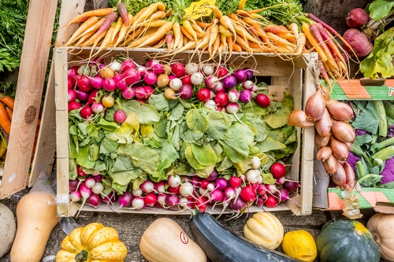

Accueil
Mentions légales
>> J'ai faim. <<
>> Je veux parler de chocolat.<<
>> Je veux vérifier ma connaissance des noms des 33 communes de l'EMS.<<
>> Je veux vérifier ma connaissance de la géolocalisation des 33 communes de l'EMS. <<
>> Je veux vérifier ma connaissance de la géolocalisation des 28 quartiers de Strasbourg <<
>> Je veux vérifier ma connaissance des codes postaux de l'EMS. <<
Pour ta santé, mange au moins 5 fruits et légumes par jour !

Hébergé par Github.
Nom de domaine enregistré chez Ionos.
Aucun cookie inclus dans le menu (enfin je sais pas).
Contact : x@x.fr